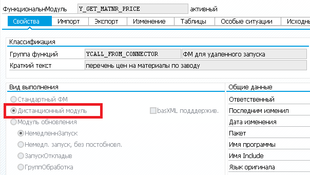
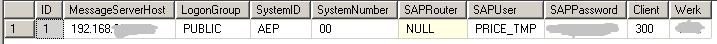
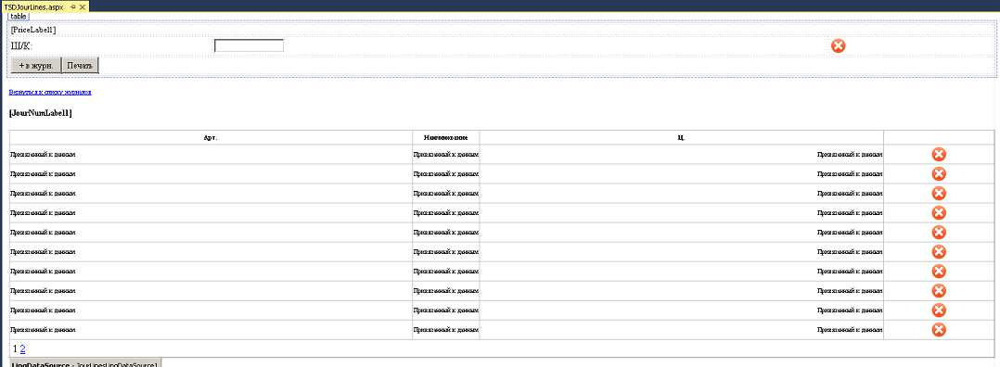

В рассматриваемом нами примере интеграции SAP ERP со сторонним ПО мы будем использовать SAP Connector for Microsoft .NET для получения данных из SAP ERP. Программное обеспечение для терминала сбора данных (ТСД) будет состоять из Microsotf Internet Information Server (IIS) на сервере и клиентского ПО Internet Explorer, технология используемая для разработки компоненты - asp.net на языке программирования C#.
При разработке FM в SAP указываем настройку "Дистанционный модуль"

Функция принимает значение завод I_WERKS и возвращает таблицу TAB
- FUNCTION Y_GET_MATNR_PRICE
- IMPORTING
- VALUE(I_WERKS) TYPE WERKS_D
- TABLES
- TAB LIKE YSOUT_PRICE
- EXCEPTIONS
- NO_DATA
- NO_VKORG.
Настройка для IIS в базе данных SQL Server

asp.net часть на C# используем SAP Connector for Microsoft .NET
Настройка SAP Connector
- public class MyBackendConfig : IDestinationConfiguration
- {
- SaalutDataClasses1DataContext context;
- public RfcConfigParameters GetParameters(String destinationName)
- {
- if (context == null)
- context = new SaalutDataClasses1DataContext();
- if ("AEP".Equals(destinationName))
- {
- var settingsSP = (from s in context.SettingsSAPERPTbls
- select s).FirstOrDefault();
- RfcConfigParameters parms = new RfcConfigParameters();
- parms.Add(RfcConfigParameters.Name, settingsSP.SystemID);
- parms.Add(RfcConfigParameters.AppServerHost, settingsSP.MessageServerHost);
- if (settingsSP.LogonGroup != null || settingsSP.LogonGroup != "")
- parms.Add(RfcConfigParameters.LogonGroup, settingsSP.LogonGroup);
- parms.Add(RfcConfigParameters.SystemID, settingsSP.SystemID);
- parms.Add(RfcConfigParameters.SystemNumber, settingsSP.SystemNumber);
- if (settingsSP.SAPRouter != null || settingsSP.SAPRouter != "")
- parms.Add(RfcConfigParameters.SAPRouter, settingsSP.SAPRouter);
- parms.Add(RfcConfigParameters.User, settingsSP.SAPUser);
- parms.Add(RfcConfigParameters.Password, settingsSP.SAPPassword);
- parms.Add(RfcConfigParameters.Client, settingsSP.Client);
- parms.Add(RfcConfigParameters.Language, "en");
- parms.Add(RfcConfigParameters.PoolSize, "5");
- parms.Add(RfcConfigParameters.MaxPoolSize, "10");
- parms.Add(RfcConfigParameters.IdleTimeout, "600");
- return parms;
- }
- else return null;
- }
- public bool ChangeEventsSupported()
- { return false; }
- public event RfcDestinationManager.ConfigurationChangeHandler ConfigurationChanged;
- }
Загрузка данных:
- RfcDestinationManager.RegisterDestinationConfiguration(cfg);//1
- RfcDestination prd = RfcDestinationManager.GetDestination("AEP");//2
- RfcRepository repo = prd.Repository;//3
- IRfcFunction pricesBapi =
- repo.CreateFunction("Y_GET_MATNR_PRICE");//4
- pricesBapi.SetValue("I_WERKS", werk); //5
- pricesBapi.Invoke(prd); //6
- IRfcTable detail = pricesBapi.GetTable("TAB");
Полученные данные вставляем в таблицу SQL Server:
- int i = 0;
- foreach (IRfcStructure elem in detail)
- {
- string matnr = elem[0].GetString();
- double kbetr = elem[1].GetDouble();
- string kschl = elem[2].GetString();
- string assort = elem[3].GetString();
- SAPPriceTbl np = new SAPPriceTbl();
- np.MATNR = matnr;
- np.KBETR = kbetr;
- np.KSCHL = kschl;
- np.ASSORT = assort;
- context.SAPPriceTbls.InsertOnSubmit(np);
- if (i == 100)
- {
- context.SubmitChanges();
- i = 0;
- }
- i++;
- }
- context.SubmitChanges();
Рисуем интерфейс в Visual Studio для ТСД. Осуществляем поиск по штрихкоду, визуально сопостовляем цену в ТСД с ценой на ценнике и в случае расхождений добавляем в журнал:

Полный код C# на GitHub
Полный код функционального модуля SAP в качестве примера:
- FUNCTION Y_GET_MATNR_PRICE
- IMPORTING
- VALUE(I_WERKS) TYPE WERKS_D
- TABLES
- TAB LIKE YSOUT_PRICE
- EXCEPTIONS
- NO_DATA
- NO_VKORG.
- DATA: lv_vkorg TYPE vkorg,
- lt_rec TYPE TABLE OF t_line,
- ls_rec TYPE t_line,
- lr_kschl TYPE ycl_common=>ty_t_kschl_range.
- SELECT SINGLE vkorg FROM t001w
- INTO lv_vkorg
- WHERE werks EQ i_werks.
- IF sy-subrc NE 0 OR lv_vkorg IS INITIAL.
- RAISE no_vkorg.
- ENDIF.
- lr_kschl = ycl_common=>get_kschl_range( iv_call_prog = sy-repid iv_call_index = 1 ).
- IF tab[] IS INITIAL.
- SELECT a971~kschl a971~matnr a971~vrkme a971~datbi a971~datab a971~knumh
- konp~kopos konp~kbetr konp~konwa AS waers konp~loevm_ko
- INTO CORRESPONDING FIELDS OF TABLE lt_rec
- FROM a971 INNER JOIN mara
- ON mara~matnr = a971~matnr
- AND mara~meins = a971~vrkme
- LEFT JOIN konp
- ON konp~knumh EQ a971~knumh
- WHERE a971~kappl EQ 'V'
- AND a971~kschl IN lr_kschl
- AND a971~vkorg EQ lv_vkorg
- AND a971~vtweg EQ '01'
- AND a971~werks EQ i_werks
- AND a971~datbi GE sy-datum
- AND a971~datab LE sy-datum.
- ELSEIF tab[] IS NOT INITIAL.
- SELECT a971~kschl a971~matnr a971~vrkme a971~datbi a971~datab a971~knumh
- konp~kopos konp~kbetr konp~konwa AS waers konp~loevm_ko
- INTO CORRESPONDING FIELDS OF TABLE lt_rec
- FROM a971 INNER JOIN mara
- ON mara~matnr = a971~matnr
- AND mara~meins = a971~vrkme
- LEFT JOIN konp
- ON konp~knumh EQ a971~knumh
- FOR ALL ENTRIES IN tab
- WHERE a971~kappl EQ 'V'
- AND a971~kschl IN lr_kschl
- AND a971~vkorg EQ lv_vkorg
- AND a971~vtweg EQ '01'
- AND a971~werks EQ i_werks
- AND a971~matnr EQ tab-matnr
- AND a971~datbi GE sy-datum
- AND a971~datab LE sy-datum.
- ENDIF.
- DELETE lt_rec WHERE loevm_ko EQ 'X'.
- IF lt_rec IS INITIAL.
- RAISE no_data.
- ENDIF.
- ls_rec-sort_order = 1.
- MODIFY lt_rec FROM ls_rec TRANSPORTING sort_order WHERE kschl EQ ycl_common=>c_vka0.
- ls_rec-sort_order = 2.
- MODIFY lt_rec FROM ls_rec TRANSPORTING sort_order WHERE kschl EQ ycl_common=>c_yvk3.
- ls_rec-sort_order = 3.
- MODIFY lt_rec FROM ls_rec TRANSPORTING sort_order WHERE kschl EQ ycl_common=>c_vkp0.
- SORT lt_rec BY matnr ASCENDING
- sort_order ASCENDING
- kopos ASCENDING.
- FIELD-SYMBOLS: <fs_rec> TYPE t_line,
- <fs_line> TYPE ysout_price.
- DATA: lv_find TYPE flag.
- CLEAR lv_find.
- CLEAR tab[].
- LOOP AT lt_rec ASSIGNING <fs_rec>.
- AT NEW matnr.
- CLEAR lv_find.
- ENDAT.
- CHECK lv_find NE 'X'.
- IF <fs_rec>-kbetr > 0.
- APPEND INITIAL LINE TO tab ASSIGNING <fs_line>.
- CHECK <fs_line> IS ASSIGNED.
- CALL FUNCTION 'BAPI_CURRENCY_CONV_TO_EXTERNAL'
- EXPORTING
- currency = <fs_rec>-waers
- amount_internal = <fs_rec>-kbetr
- IMPORTING
- amount_external = <fs_line>-kbetr.
- CALL FUNCTION 'CONVERSION_EXIT_ALPHA_OUTPUT'
- EXPORTING
- input = <fs_rec>-matnr
- IMPORTING
- output = <fs_line>-matnr.
- <fs_line>-kschl = <fs_rec>-kschl.
- CALL FUNCTION 'WLK1_CHECK'
- EXPORTING
- DATE = sy-datum
- item = <fs_rec>-matnr
- shop_werks = i_werks
- component_check = 'X'
- EXCEPTIONS
- no_listing = 1
- no_listing_in_time = 2
- existing_exclusion_listing = 3
- wrong_parameters = 4
- no_open_time_shop_in_time = 5
- no_listing_for_promotion = 6
- wrong_location = 7
- no_complete_listing_in_time = 8
- wrong_rackjobber = 9
- listing_only_as_component = 10
- no_assignment = 11
- OTHERS = 12.
- IF sy-subrc EQ 0.
- <fs_line>-assort = 'X'.
- ENDIF.
- lv_find = 'X'.
- ENDIF.
- ENDLOOP.
- ENDFUNCTION.
Функционал SAP Connector for Microsoft .NET и C# позволяет получать данные простым и удобным способом из SAP ERP.